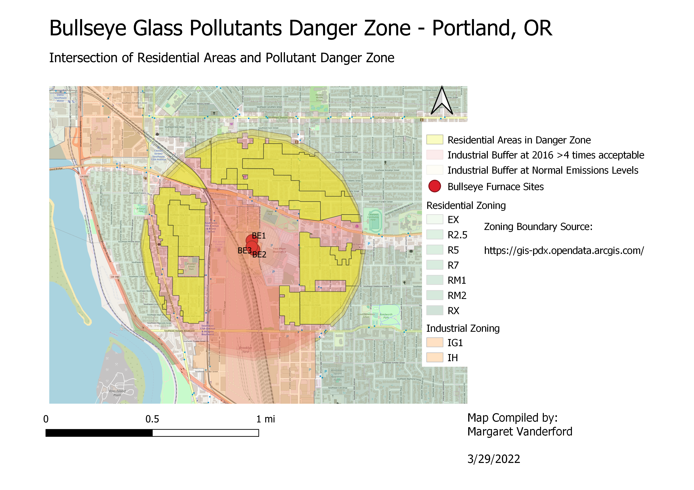

As a glass hobbiest, I am aware of many health hazards involved in my craft - especially the leaded solder and came. However until researching stained glass manufacturers, I didn't realize the process of making stained glass can also introduce all sorts of heavy metals into the environment if furnaces are not properly filtered.
Most famously, Bullseye Glass, located in Portland, OR, manufactured around a ton of white glass on May 9th and 10th, 2016. White glass requires the addition of lead oxide as part of the reaction to make the glass opaque. In the days following this batch, the EPA recorded lead in the air at over 4 times the safe level. Eventually the EPA was able to trace the pollution back to Bullseye Glass as referenced in the below article by the Portland Mercury.
Portland Mercury "Bullseye Glass Took a Risky Bet on Lead"The Bullseye lead pollution led to a community uproar as Bullseye's furnaces are located in the middle of a densely populated area. For my map, I decided to create buffers around the furnaces and then intersect the buffers with residential zones that fell within the buffer boundaries.
While I couldn't find specific city or state regulations for Portland, OR, a common recommendation for blast furnaces is a minimum 1,000 ft buffer. I created a "Normal Buffer" based on this 1,000 ft recommendation.
Since the pollution levels reached over 4 times the allowable levels, I created a buffer 4 times the size of the Normal Buffer. At 4,000 feet, this buffer may not accurately represent the spread of pollutants, but lacking weather data, it is a good first estimate.
I used a Zoning Map layer from portlandmaps.com to designate Residential Zones surrounding Bullseye Glass furnaces. I then intersected the High Level Buffer with these Residential zones to illustrate homes and neighborhoods at highest risk from Bullseye Glass pollution.
